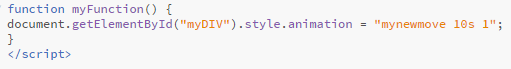
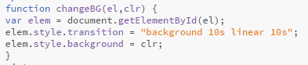

An animation lets an element gradually change from one style to another.
Click the "Javascript Test" button to trigger and manipulate the animation using javascript.

Transitions allows you to change property values smoothly, over a given duration.

Check out my transitions. Click the green button once to change the box to green. Click the blue button twice to change the box to blue and hover over the white to change the box to white.